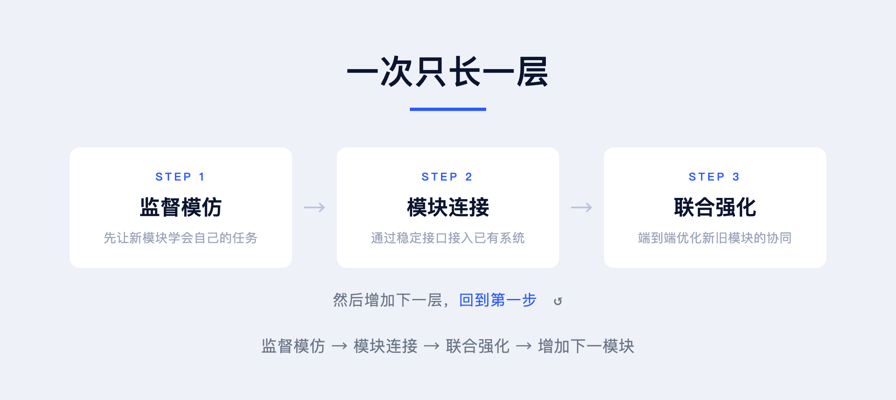
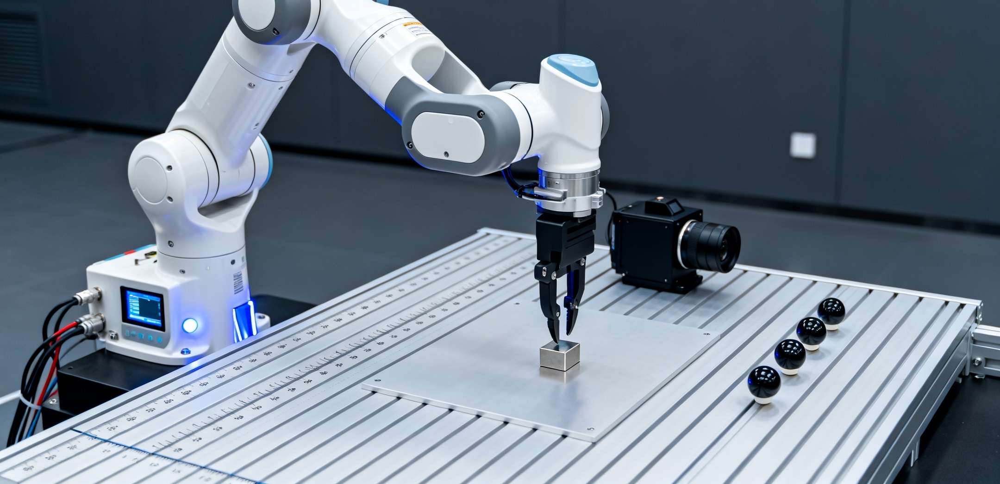
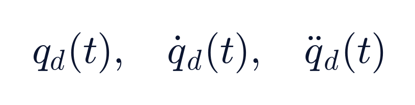
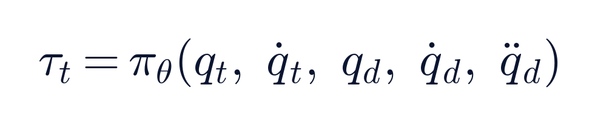
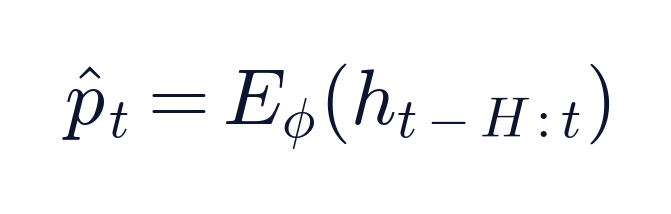
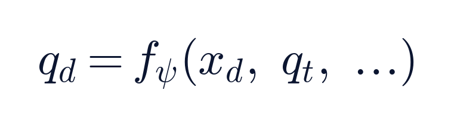
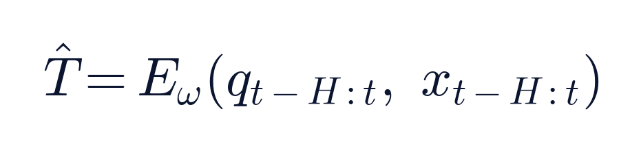
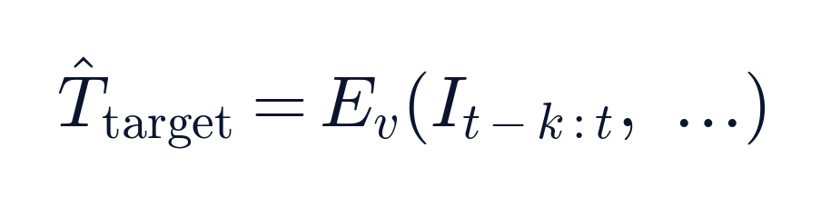

摘要
当前具身智能研究的一个重要方向，是利用端到端学习，将机器人的视觉、感知、运动规划与底层控制统一到神经网络之中。
然而，真实机器人并不是一个简单的信息输入输出系统。
机器人具有不同层次的控制回路、不同类型的传感器、不同时间尺度的反馈，以及具有明确物理约束的身体。动力学控制、空间运动、几何标定、视觉理解与语义感知，既相互依赖，又具有不同的学习难度和数据来源。
如果从一开始就将所有能力放在一个端到端模型中训练，就需要同时处理大量异构数据，并在巨大的状态与动作空间中进行优化。
我们认为，这并不是唯一的训练方式。
为此，我们提出 Evolve Training，一种面向具身智能 Foundation Model 的自底向上渐进式训练方法。
其基本思想是：
从内环到外环，从简单能力到复杂能力，一次增加一个模块，一次增加一种能力。
每一阶段首先通过监督模仿学习建立基本能力，再将新模块接入已有系统，通过端到端强化学习进行联合优化。
不同类型的数据用于训练不同层次的控制环，从而将复杂的数据异构问题分解为多个相对清晰的学习问题。
训练时，多个模块可以进行联合优化；推理时，不同控制环仍保持各自的执行频率与异步运行机制。
与此同时，Evolve Training 将动力学内环与机器人本体视为不可分割的整体。更外层的感知、运动学与任务模块通过相对稳定的接口与之连接，从而支持不同智能模块的替换、组合和迁移。
这一方法受到发育神经科学、分层运动控制、模块化内部模型与发展机器人学的启发，也与我们此前提出的 Society of Agents 架构思想相联系。
Evolve Training 的目标不是一次训练出一个完整的机器人智能，而是建立一种方法，使机器人的智能能够从已有能力出发，不断获得新的能力。
● ● ●
一、为什么需要 Evolve Training
1.1 机器人控制天然具有层次结构
传统机器人控制系统通常采用分层结构。
首先建立最底层的动力学控制环，再建立运动学与空间控制外环，随后逐渐增加视觉、感知、任务规划等更高层的功能。
机器人也拥有不同层次的传感器。
例如，关节编码器、力矩传感器等内部传感器用于测量机器人的自身状态；相机、光学跟踪仪等外部传感器用于观测机器人与外部世界之间的空间关系。
不同传感器的采样频率、观测维度、测量噪声与延迟各不相同。
机器人底层动力学控制可能需要以 1000 Hz 运行，而空间控制、视觉感知与语义理解可以工作在更低的频率。
因此，机器人智能在物理上天然具有不同的层次与时间尺度。
我们希望在训练过程中保留这种结构，而不是从一开始就要求一个模型同时学习所有功能。
1.2 不同类型的数据对应不同的控制环
具身智能训练面临一个重要问题：训练数据具有高度异构性。
例如：
- 关节编码器记录的是位置、速度和力矩。
- 外部跟踪仪记录的是机器人在三维空间中的位置和姿态。
- 相机记录的是二维图像。
- 时序数据可以反映负载和动力学变化。
- 视觉标注数据包含物体类别、位置及语义关系。
这些数据不仅维度不同，采样频率不同，所反映的物理意义也不同。
如果要求所有数据都进入同一个端到端模型，就必须处理不同模态之间的同步、对齐和联合优化问题。
但从传统控制系统的角度看，这些异构数据其实对应不同层次的控制环。
关节数据适合训练动力学环；外部空间数据适合训练运动学环；历史运动数据可以训练自适应动力学感知；图像与空间位姿数据可以训练视觉 Encoder；语义标注可以训练目标感知模块。
因此，我们提出一种不同的数据组织方式：
不同的数据训练不同的环，不同的环通过接口连接，再通过联合强化学习形成完整的智能。
如此，数据异构性不再完全依赖一个统一模型来处理，而是通过分层训练被分解到不同的模块中。
1.3 不从完整的端到端开始
端到端学习具有重要价值。它允许系统直接针对最终任务进行优化，避免人工设计的中间表示限制性能。
但完整的端到端训练也带来问题。
首先，训练复杂度较高。模型必须同时学习从感知到动作的多个映射。
其次，训练数据要求较高。不同模态的数据往往需要在同一训练过程中进行对齐。
再次，模型能力难以独立复用。更换相机、工具或者机器人身体时，可能需要重新训练较大部分系统。
最后，不同控制层具有不同的实时性要求。完全统一的推理过程可能增加高层计算对底层控制的影响。
Evolve Training 并不反对端到端学习。
它提出的是：
端到端是每一阶段的优化方法，而不是整个系统的初始训练方式。
● ● ●
二、Evolve Training 的基本原理
Evolve Training 采用 Bottom-Up 的训练方式。
机器人首先学习最基础的身体控制能力，然后逐渐增加感知、空间运动与环境理解能力。
整个过程遵循三个步骤。
2.1 第一步：监督模仿学习
每次增加一个新的模块，首先使用监督学习或模仿学习，建立其基本功能。
训练数据可以来自传统控制器、物理仿真、运动学模型、标定算法、视觉数据集或专家演示。
在这一阶段，新模块主要学习自己需要解决的问题。
例如，动力学模块学习力矩输出，视觉模块学习空间位姿估计。
无需一开始就要求整个机器人完成复杂任务。
2.2 第二步：连接已有模块
新模块完成初步训练后，将其接入已经训练好的系统。
不同模块之间通过相对稳定的接口进行信息交换。
例如：
- 负载感知模块向动力学控制环输出估计参数。
- 运动学外环向动力学内环输出关节目标。
- 视觉模块向运动学外环输出空间目标。
- 几何标定模块向空间控制提供坐标变换信息。
每增加一个模块，机器人便获得一种新的能力。
2.3 第三步：端到端强化学习
模块连接之后，再进行端到端强化学习。
这一阶段不只是优化新模块，而是改善新旧模块之间的协同，使完整系统能够更好地完成目标任务。
为了保护已有能力，可以先冻结旧模块，再逐渐开放部分参数进行联合优化。
这一过程可以不断重复：
监督模仿 → 模块连接 → 联合强化 → 增加下一模块。
这就是 Evolve Training 的基本训练循环。

● ● ●
三、具体实施：Franka 机械臂
我们以 Franka 七自由度机械臂为例，说明 Evolve Training 的逐层训练过程。

3.1 第一阶段：基础动力学控制
首先训练机器人的基本动力学控制能力。
给定各种不同的关节运动轨迹，包括目标位置、速度及必要的加速度：

AI 读取机器人的当前状态及目标轨迹，学习输出各关节力矩：

训练目标是尽可能减小轨迹跟踪误差，同时限制过大的力矩与不平滑的控制输出。
初期可以利用已有的动力学控制器产生训练数据，通过监督模仿学习建立基础策略，再通过强化学习进一步改善性能。
这一阶段并不需要复杂的神经网络。一个简单的 MLP 可能就足够了。
训练完成后，形成能够高速执行的动力学控制内环。
例如，将其运行频率设定为 1000 Hz。
这一阶段获得的是机器人的基本运动能力。
动力学内环与本体的关系
这里有一个重要原则：
动力学内环与机器人本体是一体的。
动力学控制直接依赖机器人的关节、驱动器、质量分布、传感器与机械结构。
因此，我们不将动力学控制器视为一个可以脱离机器人身体独立迁移的通用模块。
它与机器人本体共同构成最底层的身体控制系统。
当机器人身体改变时，相关动力学控制环必须与之一起适配或迁移。
3.2 第二阶段：负载感知与动力学适应
第二阶段，在机械臂末端增加随机负载。
例如，将负载质量随机设置在 1–3 kg 范围内。
不同负载改变了机器人的动力学特性，可能使原有的控制器产生跟踪误差。
因此增加一个感知模块。
模块从一段时间内的关节运动、速度和力矩历史中，估计负载参数及相关动力学变化。

其中，历史信息可以包括关节状态、力矩和目标轨迹。
估计结果可以包含负载质量、质心、惯量或与控制相关的潜在动力学表征。
该模块可以采用 TCN、MLP 历史窗口或其他时序编码器。
首先使用随机负载仿真数据进行监督训练。
然后，将它接入第一阶段已经训练好的动力学控制环，进行端到端强化学习。
经过联合训练，机器人能够根据历史运动信息感知动力学变化，并调整输出力矩，使不同负载条件下的轨迹跟踪误差尽可能小。
需要指出的是，参数能否从历史数据中准确估计，取决于系统的可辨识性以及运动轨迹是否具有足够的激励。
这一阶段获得的是对负载变化的自适应控制能力。
它仍然属于与机器人身体紧密绑定的动力学控制体系。
3.3 第三阶段：运动学外环
第三阶段开始学习运动学。
前两个阶段解决的是给定关节轨迹时，机器人如何准确运动。
现在需要解决另一个问题：
给定外部空间中的目标位置，机器人应该怎样运动？
因此，我们在动力学控制环之外增加一个运动学外环。
其任务是从外部空间观测和目标状态，估计相应的关节目标。

对于具有冗余自由度的机械臂，需要结合当前关节姿态及其他约束，以处理逆运动学中的多解问题。
这一模块同样可以使用 MLP。
首先通过传统运动学求解器产生训练数据，进行监督模仿学习。
然后，将运动学外环与已有的动力学控制系统连接，再通过端到端强化学习优化空间运动精度。
在实际推理中，两层仍然保持不同频率：
动力学内环运行在 1000 Hz。
运动学外环运行在 100 Hz。
训练时可以联合优化，推理时保持分层异步执行。
这一阶段使机器人从关节轨迹跟踪，发展为外部空间目标跟踪。
3.4 第四阶段：自适应手眼标定
第四阶段增加一个 Encoder，用于估计机器人、相机与工具之间的几何关系。
在真实系统中，相机或工具的安装位置可能发生变化。
如果仍使用原有的标定参数，外部空间目标与机器人实际运动之间就可能出现误差。
因此，我们利用一段时间内关节状态 q 与外部空间观测 x 的变化，学习估计几何关系或其变化量。

其中，T̂ 代表相应的坐标变换估计。
首先，通过不同相机位置和工具安装状态的数据训练 Encoder。
然后将其接入已有的运动学外环，再通过端到端强化学习优化整个系统。
这样，机器人能够根据历史运动和观测信息，适应相机或工具几何关系的变化。
这一阶段的关键是运动与观测必须提供足够的几何约束，否则某些外参不能被唯一估计。
这一阶段获得的是自适应几何标定能力。
3.5 第五阶段：视觉与语义感知
第五阶段，在空间控制外环之上增加视觉与语义感知能力。
此前，机器人接收的是已经给定的三维空间目标。
现在，我们希望机器人能够从二维图像中识别目标，并估计其三维位置。
首先增加一个视觉 Encoder。
它能够从单帧或多帧图像中，估计机器人与目标之间的相对空间位置和姿态。

对于单目图像，需要结合必要的几何先验、标定信息、多帧运动或物体尺寸约束，以解决深度和尺度歧义。
在视觉 Encoder 的基础上，再增加目标感知与语义模块，使机器人能够理解需要操作的对象。
首先分别进行监督训练。
然后将视觉和语义模块接入已有的运动学与动力学控制系统，再通过端到端强化学习进行联合优化。
最终形成：
图像 → 目标识别 → 三维位姿估计 → 空间控制 → 动力学控制 → 机器人运动。
这样，机器人不再只能跟踪给定的三维坐标，还能够从图像中自主识别目标并完成运动。
● ● ●
四、数据异构性：不同的数据训练不同的环
这是 Evolve Training 的一个重要特点。
不同机器人学习任务需要的数据并不相同。
动力学控制需要关节运动和力矩数据；运动学学习需要关节状态与外部空间位置的对应关系；视觉感知需要图像和几何标注；语义理解需要物体识别与语义数据。
这些数据的结构、频率、来源和物理意义存在很大差异。
传统端到端训练常常试图在一个统一任务中同时使用多种数据。
Evolve Training 则将不同类型的数据对应到不同层次的学习任务。
这意味着，不同数据集不必一开始就具有完全统一的采样频率和数据结构。
不同模块可以使用各自适合的数据进行训练。
只有在模块连接与联合强化学习阶段，才需要处理跨模块的协同和必要的数据对齐。
训练数据的异构性，由不同控制层次来承接，而不是要求一个网络直接消化所有数据。
这为利用不同实验室、不同传感器、不同机器人平台所产生的数据提供了一种组织方式。
但数据能否真正跨平台复用，仍取决于其物理语义、接口定义及训练分布是否兼容。
● ● ●
五、身体与智能：动力学内环必须与本体一起迁移
Evolve Training 将身体控制与更高层智能区分开来。
其中，动力学内环不是一个与身体相互独立的软件模块。
它与机器人本体共同形成一个具有明确物理意义的整体。
例如，Franka 的关节结构、驱动器、动力学参数和底层控制环共同决定了它的基本运动特性。
如果更换一台不同的机器人，不能简单地要求原来的动力学控制器直接控制新的身体。
需要为新身体建立相应的动力学控制能力。
但更外层的模型可能具有更高的复用价值。
例如，一个视觉模块识别出目标的三维位置，它未必需要知道机械臂具体使用什么驱动器。
一个高层空间任务模块也可能只需要表达期望的工具位姿或运动目标。
因此，我们将系统区分为：
Body-Bound Intelligence：与身体绑定的智能。
包括机器人本体、执行器、基础动力学控制和紧密相关的本体状态感知。
Transferable Intelligence：可以尝试跨身体迁移的智能。
包括部分空间控制、几何理解、视觉感知、语义理解和任务策略。
两者之间通过稳定的接口连接。
当机器人更换身体时，身体及其动力学内环作为一个整体发生变化。更高层的模块则可以保留或进行局部适配。
这就相当于人的大脑换了一个身体。
大脑不必完全重新学习视觉与任务知识，但需要学会如何通过新身体执行动作。
当然，运动学模块也可能依赖具体身体结构，因而其可迁移程度通常介于底层动力学和高层感知之间。
这意味着模块的可迁移性并不是绝对的，而是与其距离具体身体物理特性的程度有关。
越接近本体的模块，越依赖具体硬件；越接近抽象目标的模块，越有可能在不同身体之间复用。
这是一项需要实验验证的架构假设，而不是普遍成立的定律。
● ● ●
六、训练时联合优化，推理时异步运行
Evolve Training 的另一个核心原则，是将训练过程与实际运行方式区分开来。
在训练阶段，新加入的模块能够与已有模块共同优化。
例如，当视觉模块加入后，最终的空间跟踪误差可以用于改善视觉定位、运动学和动力学模块之间的协同。
但在实际推理阶段，系统仍然保持不同模块的独立执行频率。
- 语义与视觉感知 目标识别、空间估计 · 任务相关
- 几何与参数估计 外参、负载及状态估计 · 按变化速度设置
- 运动学外环 空间目标与关节参考 · 100 Hz
- 动力学内环 高速力矩控制 · 1000 Hz
这一结构与 Society of Agents 的基本思想相联系。
各模块拥有不同的功能和时间尺度，通过接口进行交互。
高层并不需要接管底层每一个控制周期。
低层可以在没有新的视觉输入时继续完成高速反馈控制。
这样，训练能够利用跨模块信息优化整体任务，而执行阶段仍能够保持控制系统的实时性。
不过，异步结构仍然需要处理通信延迟、状态陈旧、时间戳和模块间更新不一致的问题。
因此，控制频率的划分本身并不能自动保证闭环稳定性，还需要系统级验证。
● ● ●
七、生物学启发
Evolve Training 的基本思想与多个生物学研究方向具有联系。
7.1 发育神经科学：先掌握能力，再利用能力学习
婴儿并不是先建立一个完整的世界模型，再开始学习运动。
姿势控制、伸手、抓握与移动等能力逐渐形成，而新的运动能力又创造了新的感知与学习机会。
运动和感知的发展相互促进。
这与 Evolve Training 的训练思想相似。
先建立基础控制能力，再利用已有能力训练新的感知与控制功能。
不过，真实生物发育并不是严格的单向过程。视觉、触觉、运动与认知往往同时发展，并相互影响。
因此，我们借鉴的是渐进式技能获得的理念，而不是要求机器人严格模仿婴儿发育顺序。
7.2 Bernstein：从简单协调到复杂运动
Nikolai Bernstein 提出的运动自由度问题指出，复杂运动需要协调大量关节与肌肉。
运动学习有时会经历限制自由度、逐渐释放自由度以及更有效利用身体动力学的过程。
这一思想提示我们：
复杂控制问题可以先在受限条件下建立基本能力，再逐步增加复杂性。
Evolve Training 将类似的思想扩展到整个具身智能系统。
它不仅逐步增加运动复杂度，还逐步增加感知输入、功能模块与控制层次。
但 Bernstein 的自由度变化模式并非适用于所有运动任务。
7.3 生物神经系统的分层控制
哺乳动物的运动控制不是由单一的大脑区域统一完成。
脊髓局部回路、脑干、小脑和皮层等系统共同参与运动生成、反馈调节、协调与动作选择。
这些系统具有不同的动态特性和功能分工。
因此，高级神经系统不需要在每一个瞬间显式指定全部肌肉控制信号。
这与 Evolve Training 的分层异步推理具有相似性。
但生物神经系统是高度耦合、并行运行的网络，并不等同于一组严格串联的数字控制器。
7.4 MOSAIC：模块化运动控制
Wolpert 与 Kawato 提出的 MOSAIC 理论采用多个 Forward Model 与 Inverse Model，描述运动系统如何适应不同动力学条件。
Forward Model 预测动作后果，Inverse Model 计算运动控制指令。
不同内部模型可以针对不同环境形成专门能力，并根据预测结果进行组合或选择。
这一思想与 Evolve Training 的负载感知、自适应控制及模块组合具有直接联系。
它说明复杂运动智能可以通过多个具有不同功能的模型来构建，而不一定全部依赖一个统一模型。
7.5 Developmental Robotics：渐进式能力发展
发展机器人学研究机器人如何通过探索和学习，逐渐形成新的能力。
Pierre-Yves Oudeyer 等人的工作强调内在动机、学习进展与自主课程形成。
机器人可以通过已经获得的能力探索新的任务，并逐渐发展更复杂的运动和交互行为。
Evolve Training 与这一思想接近，但具有更明确的控制工程结构。
其训练顺序首先由动力学、运动学、感知与认知之间的物理关系组织，而非完全依靠自主探索形成。
● ● ●
八、与已有学习方法的关系
Evolve Training 与多种已有方法存在联系，但侧重点不同。
8.1 Hierarchical Reinforcement Learning
Hierarchical RL 研究不同抽象层次的策略、子目标和时间尺度。
Evolve Training 同样具有分层结构，但更加关注这些层次如何逐步训练和形成。
它不仅定义策略层次，还规定了监督初始化、模块连接和阶段性联合强化学习的过程。
8.2 Curriculum Learning
Curriculum Learning 通过安排逐渐复杂的任务，改善学习效率。
Evolve Training 不仅逐渐增加任务难度，还增加模型结构、传感器输入与控制环。
因此，它可以被理解为一种模型结构与训练任务共同演进的渐进式学习方法。
8.3 Progressive Neural Networks
Progressive Neural Networks 通过逐步增加网络结构与复用已有表征，支持连续学习与迁移。
相关研究已经探索了从仿真到真实机器人的技能迁移。
Evolve Training 与之有明显联系，但它以机器人控制系统的物理层次作为组织原则，并强调异构数据、身体绑定模块与异步推理机制。
8.4 Monolithic End-to-End Learning
传统完整端到端学习试图在统一模型中直接建立感知输入与动作输出的关系。
Evolve Training 则采用逐层学习和阶段性联合优化。
两者并非互相排斥。
端到端模型可能在特定任务中获得更好的整体最优性能，而渐进式方法可能在训练效率、模块复用、已有能力保留和跨任务扩展方面具有优势。
这些差异需要通过实验，而不是仅凭架构讨论来证明。
● ● ●
九、关键研究假设
我们提出以下六个研究假设。
H1：渐进式训练能够提高样本效率。
先学习基础控制能力，再逐步增加模块，可能比从零开始训练完整模型需要更少的交互样本。
H2：分层训练能够更有效地利用异构数据。
不同来源、不同频率的数据可以首先训练对应的控制环，降低对全模态同步数据的依赖。
H3：阶段性端到端强化学习能够改善模块协同。
单独训练的模块在连接后可能存在误差积累。联合强化学习有望改善系统整体性能。
H4：模块化结构能够减少新能力学习对旧能力的影响。
通过参数冻结、逐步解冻及历史能力约束，降低新模块训练造成的性能退化。
H5：分层异步推理能够提高实时执行效率。
高层模块低频运行，动力学内环高速执行，有望降低高维感知计算对底层反馈控制的干扰。
H6：身体绑定与稳定接口有利于跨机器人迁移。
将机器人本体与动力学内环作为整体，并通过标准化接口连接高层智能，有望降低跨身体适配成本。
以上均为待验证假设。
● ● ●
十、实验验证
我们建议首先使用 Franka 机械臂，验证 Evolve Training 的核心优势。
10.1 三组主要对照
A. Monolithic RL
将全部模块从零开始联合训练。
B. Progressive Training without Joint RL
按照相同的顺序逐层训练模块，但不进行阶段性全系统联合强化学习。
C. Evolve Training
按照监督模仿、模块连接、阶段性端到端强化学习的方式训练。
为保证公平，应尽可能使用相同的任务数据、训练预算和模型容量，并明确报告专家数据成本。
10.2 核心实验
第一组实验是基础轨迹跟踪。
测试不同关节轨迹下的跟踪误差、控制平滑性与学习效率。
第二组实验是未知负载控制。
在 1–3 kg 随机负载下，测试模型能否根据历史运动数据适应动力学变化。
第三组实验是空间控制。
增加运动学外环，测试机器人跟踪三维空间轨迹的精度。
第四组实验是几何变化适应。
改变相机与工具的安装关系，测试自适应标定模块能否恢复空间定位精度。
第五组实验是图像引导运动。
从二维图像识别目标，估计三维位置，再控制机械臂运动到目标。
第六组实验是跨身体迁移。
保留部分高层感知与空间任务模块，将其连接到另一台不同的机械臂及其动力学控制环上。
比较重新训练全部模型、只适配部分模块与从零训练之间的差异。
10.3 数据异构性实验
除了比较任务成功率，我们特别建议设计一组异构数据实验。
分别使用关节控制数据、外部空间跟踪数据以及图像数据，训练对应的模块。
允许不同数据集具有不同的采样频率、来源和采集时间，不要求所有样本同时包含全部模态。
然后将这些模块接入同一机器人，通过联合强化学习进行系统整合。
再与必须使用全模态对齐数据训练的端到端基线进行比较。
主要考察：
- 所需的完整多模态数据量
- 各模块独立数据的利用效率
- 训练样本需求与总计算成本
- 连接后的任务成功率
- 新增传感器或新数据来源时的适配成本
这项实验可以直接验证 Evolve Training 在异构训练数据方面的价值。
● ● ●
十一、技术挑战
11.1 联合训练可能损害已有能力
端到端强化学习可能改变已经训练好的底层控制策略。
因此，需要研究冻结、逐步解冻、历史任务约束与安全控制机制。
尤其是身体绑定的动力学内环，其稳定性必须通过独立测试保证。
11.2 参数可辨识性
负载质量、质心、惯量及几何外参不一定能从任意历史数据中唯一估计。
模型需要足够的运动激励和观测信息。
必要时，可以估计对控制有用的潜在状态，而不强制恢复全部真实物理参数。
11.3 模块接口与联合优化之间的矛盾
联合训练可以提高任务性能，但也可能使模块形成强烈的相互依赖。
如果模块之间依赖大量隐式信息，独立替换将变得困难。
因此，需要明确接口的物理意义，并在训练中约束模块间的耦合程度。
11.4 数据异构性不会完全消失
分层训练减少了对统一数据格式和全模态同步的要求，但无法消除所有异构问题。
不同数据集仍可能存在坐标系、标定、单位、时间戳、动力学条件与分布差异。
这些差异需要在相应模块或接口处处理。
11.5 不同层次的迁移能力存在差异
并非越高层的模块就一定越容易迁移。
例如，不同机械臂的工作空间、末端工具和任务约束可能不同，运动学与空间策略仍需要适配。
因此，跨机器人迁移需要明确哪些能力共享、哪些能力保留在身体内部，以及哪些接口必须重新训练。
● ● ●
十二、从 Evolve Training 到 Foundation Model
如果 Evolve Training 只在一台 Franka 机械臂上完成一次分层训练，它仍然只是一个机器人学习方法。
要发展为 Foundation Model，需要进一步扩大能力的通用性与复用范围。
我们设想的 Foundation Model 不一定是一个不可拆分的巨大网络。
它也可以是一组具有不同物理意义、不同运行频率，并通过标准接口连接的智能模块。
不同类型的数据用于训练不同能力。
不同机器人拥有各自的身体与动力学控制环。
更外层的视觉、空间和任务模型可以在满足接口及能力约束的条件下进行迁移。
随着新任务、新传感器和新机器人平台加入，系统可以继续增加或更新模块，而不必总是从零开始训练全部能力。
这种方法与 Society of Agents 的基本理念一致。
智能并非一定来自一个统一模型，而可以来自多个不同功能、不同时间尺度的模块之间的协作。
Evolve Training 进一步提出了这些模块应如何被逐步训练出来。
Society of Agents 关注智能系统如何组织，Evolve Training 关注智能系统如何成长。
前者提供协作结构，后者提供训练路径。
● ● ●
十三、结论：让智能从身体中生长
传统机器人控制从内环到外环逐层构建。
我们认为，具身智能也可以采用相似的方式。
机器人首先学习控制自己的身体，然后学习适应负载和动力学变化，再学习外部空间控制、几何关系、视觉感知与语义理解。
每次增加一个模块，每次增加一种能力。
每个模块首先使用适合自己的数据进行监督模仿学习，再与已有模块连接，通过端到端强化学习进行联合优化。
不同类型的数据不必一开始就统一到同一个训练系统中。
它们可以分别训练不同层次的能力，再通过模块之间的协作形成完整智能。
训练可以联合，运行仍然异步。
动力学内环与机器人本体作为整体存在，而更外层的智能可以通过接口与不同的身体连接。
这意味着，当机器人更换身体时，不必重新学习全部视觉、空间和任务知识。
当机器人增加一种新的感知能力，也不必重新学习最基本的运动控制。
Evolve Training 并不是放弃端到端学习，而是不从端到端开始。
我们希望建立一种方法，使具身智能能够从已有的身体能力出发，逐渐扩展感知、理解和行动能力。
智能不是一次训练完成的，而是可以持续生长的。
● ● ●
参考文献
- 01Franchak, J. M., & Adolph, K. E. (2024). An Update of the Development of Motor Behavior. WIREs Cognitive Science, 15(6), e1682. doi.org/10.1002/wcs.1682
- 01Guimarães, A. N., et al. (2020). Freezing Degrees of Freedom During Motor Learning: A Systematic Review. Motor Control, 24(3), 457–471. doi.org/10.1123/mc.2019-0060
- 01Wolpert, D. M., & Kawato, M. (1998). Multiple Paired Forward and Inverse Models for Motor Control. Neural Networks, 11(7–8), 1317–1329. doi.org/10.1016/S0893-6080(98)00066-5
- 01Oudeyer, P.-Y. (2016). How Evolution May Work Through Curiosity-Driven Developmental Process. Topics in Cognitive Science. doi.org/10.1111/tops.12196
- 01Rusu, A. A., et al. (2016). Progressive Neural Networks. arxiv.org/abs/1606.04671
- 01Rusu, A. A., et al. (2017). Sim-to-Real Robot Learning from Pixels with Progressive Nets. Proceedings of the Conference on Robot Learning, PMLR 78, 262–270. proceedings.mlr.press/v78/rusu17a.html
本白皮书描述一种研究中的具身智能训练方法论。有关训练效率、数据异构性处理、模块复用和跨机器人迁移的预期优势，仍需要系统实验验证。